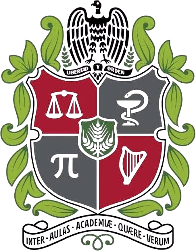

RSW
Marca de Agua Robusta Anti‑Deepfake por Espectro Ensanchado
Ocultar un mensaje verificable dentro de una imagen para que permanezca invisible — y sobreviva al canal con pérdidas de las redes sociales.
Michael S. Betancourt Gelves · Nicolás A. Castellanos Rico
Prof. Oswaldo Rojas Camacho — Universidad Nacional de Colombia
Ver ya no es creer
La IA generativa ha inundado internet de deepfakes. Ya no podemos confiar en una imagen a simple vista — necesitamos una vía matemática para probar su autenticidad y su procedencia.
Una marca de agua invisible de procedencia incrusta una firma verificable dentro de los píxeles. El reto: esa firma debe persistir tras comprimir, reescalar y re‑publicar la imagen.
Teoría de la Información
Transmitir un mensaje oculto por un canal ruidoso (la compresión y el reescalado de las plataformas) de forma imperceptible y recuperable.
Cyp, CC BY‑SA 3.0, vía Wikimedia Commons
Fragilidad ante un canal con pérdidas
La esteganografía tradicional oculta bits en el dominio espacial o en bloques 8×8 de la DCT. Al subir la imagen a una red social, esta se recomprime y, sobre todo, se reescala — ambas operaciones desincronizan la retícula 8×8 y destruyen los bits ocultos.
Formalmente, con portador x, secreto m y operador de canal C (reescalado ∘ recompresión), se necesita un codificador E y un decodificador D tales que:
…con alta probabilidad, manteniendo pequeña la distorsión perceptual entre x y E(x,m).
Dos objetivos en conflicto
Cada decibelio gastado en sobrevivir a la compresión es un decibelio de huella estadística. Todo el proyecto es un ejercicio de navegar este compromiso, y de él nace nuestra marca de agua robusta.
Una marca de agua robusta
El sistema, en una frase
Incrusta un texto corto y verificable (≤ 512 B comprimidos) que sobrevive el recorrido completo de Facebook, WhatsApp y Pinterest — reescalado y recompresión — sin dejar de ser invisible.
Para: una marca de procedencia anti‑deepfake.
De dónde viene el nombre
El proyecto se llama RSW —Robust Spread‑spectrum Watermark— porque eso es justo lo que construimos: una marca de agua robusta basada en espectro ensanchado.
Su punto de partida teórico fue la esteganografía de mínima distorsión (ANS + STC): oculta mucha información pero muere ante el reescalado. De ahí tomamos el principio rector —cambiar el portador lo menos posible— y lo llevamos a un esquema que sí resiste el cambio de tamaño: el espectro ensanchado.
| Propiedad | La marca de agua robusta |
|---|---|
| Capacidad | texto, ≤ 512 B comprimidos |
| Sobrevive recompresión JPEG | sí |
| Sobrevive el reescalado de redes | sí |
La tubería, de principio a fin
Codif. de fuente
Menos bits que ocultar ⇒ cada bit se reparte sobre más coeficientes ⇒ más robustez y calidad. (Shannon)
Codif. de canal
Reed‑Solomon repara los errores de byte que el reescalado y la compresión dejan pasar.
Reparto robusto
El espectro ensanchado sobre una malla fija hace que el cambio de tamaño no borre la marca.
Cada etapa corresponde a un resultado clásico de teoría de la información — las siguientes láminas las toman una por una.
Entropía de Shannon — el suelo de bits
La entropía de una fuente X con distribución p(x) es el número medio de bits/símbolo necesarios para representarla sin pérdida:
El teorema de codificación de fuente de Shannon (1948): ningún código sin pérdida baja de H(X) bits/símbolo en promedio — y ese límite es alcanzable asintóticamente.

Konrad Jacobs, CC BY‑SA 2.0 DE, vía Wikimedia Commons
De Huffman a ANS

Meteficha, dominio público, vía Wikimedia Commons
Huffman (1952)
Código prefijo óptimo de longitud entera. Rápido, pero desperdicia hasta ~1 bit/símbolo.
Lempel‑Ziv / LZ77 (1977)
Sustituye subcadenas repetidas por referencias (distancia, longitud) — captura la redundancia contextual. Es la base de Brotli, el compresor que usamos.
ANS — Sistemas Numéricos Asimétricos (Duda 2014)
Velocidad de Huffman + compresión aritmética. Fue el punto de partida entrópico del proyecto (véase la siguiente lámina); en la práctica, Brotli cumple ese papel.
La herencia: ANS + STC
Una línea muy potente de la esteganografía combina un codificador entrópico como ANS con los Códigos de Síndrome‑Trellis (STC): dado un mensaje m, el STC busca el estego y que cumple H·y = m cambiando lo menos posible el portador.
Ese costo se mide con funciones perceptuales tipo J‑UNIWARD (wavelets) y se resuelve con Viterbi. Es óptimo para ocultar mucha información… pero muere cuando la imagen se reescala.
Qué nos llevamos de aquí
El principio rector: minimizar los cambios en el portador. Es lo que hace una marca a la vez robusta e invisible.
Pero lo aplicamos con otra herramienta —el espectro ensanchado— que sí tolera el reescalado. Por eso el sistema implementado no usa ANS ni STC: usa Brotli para comprimir e ISS para incrustar.
La Transformada Discreta del Coseno
Nuestro sistema opera en el dominio de la DCT. La DCT‑II 2‑D ortonormal de un bloque N×N es:
Introducida por Ahmed, Natarajan y Rao (1974). Concentra la energía en pocos coeficientes de baja frecuencia — la misma propiedad que explota JPEG.
¿Dónde incrustamos?
Ni en el término DC (muy visible) ni en las frecuencias más altas (JPEG las destruye primero) — ocultamos en la banda de media frecuencia: el punto óptimo de robustez.

FelixH, dominio público, vía Wikimedia Commons
Orden de frecuencias y el ojo humano

Alex Khristov, dominio público, vía Wikimedia Commons
El barrido en zig‑zag ordena los coeficientes de baja→alta frecuencia; es como JPEG recorre cada bloque. La lección que aprovechamos: la banda de media frecuencia es el punto óptimo, y nuestra marca incrusta en una banda media (de 8 a 400 ciclos) de la DCT global.
Enmascaramiento por contraste (Watson 1993)
El sistema visual humano tolera mucho más ruido en regiones texturadas que en las lisas (cielo, piel). Tanto aquel enfoque clásico como nuestra marca lo aprovechan:
- Fondo (STC) — una función de costo dirige los cambios a la textura.
- Nuestra marca — una máscara perceptual escala la señal según la actividad local.
Reed‑Solomon repara las ráfagas
Un código RS(n,k) sobre GF(28) trata k bytes de datos como un polinomio evaluado en n = 255 puntos, añadiendo n−k bytes de paridad. Corrige
Perfecto para ráfagas: un byte cuenta como un símbolo sin importar cuántos de sus bits fallen — justo el tipo de error que dejan el reescalado y la compresión.
- En nuestra marca: n−k = 32 → corrige 16 bytes por bloque.
Un CRC‑16/CCITT en la cabecera evita falsos positivos: una imagen sin marca falla el CRC y se reporta como “sin marca”, nunca como basura.

Bobmath, CC BY‑SA 3.0, vía Wikimedia Commons
La Marca de Agua Robusta
Cómo sobrevive a Facebook, WhatsApp y Pinterest
Por qué el reescalado es letal
Facebook, WhatsApp y Pinterest reducen y recomprimen cada subida.
Reducir desincroniza la retícula de bloques 8×8 de la que depende la esteganografía clásica —
la extracción devuelve header sync mismatch.
La solución: olvidar la retícula
Nuestra marca incrusta sobre una única transformada global a una resolución canónica, así cualquier reescalado se deshace antes de decodificar.
El contenedor completo
precedido por una cabecera ultra‑redundante de 64 bits:
La cabecera se decodifica primero y dice cuántos bits de carga leer — así los mensajes cortos usan menos bits ⇒ mayor calidad y más margen.
Resincronización a resolución canónica
Tanto el insertor como el extractor llevan primero la luminancia a una malla fija S × S (S = 1152):
Cualquiera que sea el tamaño arbitrario al que una plataforma remuestree, el extractor lo devuelve a la misma malla canónica — la retícula de incrustación nunca se pierde. Solo la perturbación de la marca se remuestrea de vuelta al tamaño nativo, así la imagen conserva su aspecto y se ve limpia.
Espectro Ensanchado Mejorado (ISS)
Cada bit bi se reparte sobre un grupo Gi de L coeficientes DCT con signos pseudoaleatorios sc. El espectro ensanchado clásico deja que la imagen actúe como ruido; el ISS (Malvar y Florêncio 2003) lo cancela algebraicamente.
Con objetivo \(\tau_i=\alpha(2b_i-1)\) y proyección previa \(p_i\):
Como \(s_c^2=1\), la proyección posterior resulta exactamente \(\tau_i\) — el término del portador \(p_i\) se anula.
La detección es ciega y solo por signo:
La cota de Nyquist–Shannon
La marca ocupa frecuencias espaciales hasta fhi. Por el teorema de muestreo, reescalar a W píxeles solo preserva frecuencias por debajo de W/2 — todo lo superior es aniquilado por el filtro anti‑aliasing.
Insertar sobre un original enorme obliga a la marca a atravesar una gran razón de remuestreo (canónico → nativo → descarga), y dos núcleos de interpolación imperfectos erosionan la banda media.
La solución — acotar el tamaño de trabajo
Todo original cuyo lado mayor exceda Smáx = 2048 px se reduce primero. Esto acota la razón de remuestreo y coincide con lo que las plataformas conservan igual — la corrección clave para fotos de alta resolución.

Jacopo Bertolotti, CC0, vía Wikimedia Commons
Fuerza adaptativa y máscara perceptual
Fuerza por carga útil
La fiabilidad por correlación crece como \(\sqrt{L}\) (coeficientes por bit). Un mensaje largo tiene L pequeño y pierde margen, así la amplitud sube automáticamente:
Cref=400, βmáx=1.60. Detección por signo ⇒ transparente para el extractor.
Máscara adaptativa al contenido
La perturbación espacial se escala por la actividad local (varianza en una ventana w×w), concentrando la marca en la textura y retirándola de cielo/piel lisos:
El suelo 0.72 conserva marca suficiente en portadores lisos para sobrevivir descargas pequeñas.
Mensaje corto → repartido sobre cientos de coeficientes, insertado en voz baja (~38 dB). Carga completa → la amplitud sube para mantener el mismo margen de canal (~31 dB).
Sobrevive todo el recorrido social
Ejecución real marcar/verificar
[watermark] done
payload : 19 B (max 512 B)
PSNR : 38.45 dB ✓ invisible
survives : FB / WhatsApp / Pinterest
[verify] marca hallada y CRC válido ✓
as text : 'authentic:mike-2026'Supervivencia validada
0 errores de bit / recuperación exacta de una carga de 512 bytes a través de tuberías fieles de Facebook, WhatsApp, Pinterest y estado de WhatsApp (reducción a 2048/1600/736/1024 px + JPEG Q60–Q85, 4:2:0) — y aún se recupera de descargas pequeñas del feed de Facebook hasta ~480 px.
Límite honesto: resiste reescalado + recompresión + rotación de 90°, pero no el recorte duro ni las capturas de pantalla (mueven la retícula de sincronía). Comparte el PNG marcado sin recortar.
¿Qué tan detectable es?
Robustez e indetectabilidad son objetivos opuestos. El proyecto incluye un banco de pruebas para medir el compromiso: características SPAM de 686‑D (Pevný, Bas y Fridrich 2010) + un discriminante lineal de Fisher regularizado, puntuado por el error del esteganalista:
| Esquema | PE | ROC AUC | Lectura |
|---|---|---|---|
| Marca de agua (ISS, ~35–40 dB) | ~0.00 | ~1.00 | totalmente detectable — por diseño; es una marca, no algo encubierto |
Un patrón de medida relativo de un detector ligero — no una afirmación frente a un esteganalizador CNN moderno. Nuestra marca no busca esconderse: su valor es ser robusta e infalsificable, no encubierta.
Las cuatro métricas
PSNR — imperceptibilidad
≈38 dB (corto) … ≈31 dB (carga completa).
SSIM — fidelidad estructural
Compara luminancia, contraste y estructura en ventanas locales (Wang et al. 2004) — más cercana a la percepción humana que el MSE.
BER — integridad
Fracción de bits del mensaje erróneos tras el canal; debe caer bajo la capacidad correctora de Reed‑Solomon para una recuperación exacta.
Divergencia KL — seguridad
ε‑seguridad de Cachin; minimizar cambios (compresión + máscara) la reduce.
Limpio, probado, portable
Mapa de módulos (rsw/)
| Módulo | Responsabilidad |
|---|---|
robust_watermark | ISS · malla canónica · enmascaramiento |
steganalysis | banco de pruebas SPAM + Fisher |
channel_simulator | supervivencia a reescalado + JPEG |
config | parámetros compartidos |
94
pruebas superadas — cubren el ciclo marcar/verificar, la robustez al reescalado y JPEG, y el rechazo de imágenes sin marca
formas de ejecutar
GUI · CLI · app autónoma
binario sin Python
macOS · Win · Linux
NumPy/SciPy/Pillow puro — sin ML de caja negra.
Todo el sistema en tres comandos
# ── Marcar una imagen (texto de hasta 512 bytes comprimidos) ──
python cli.py watermark --cover photo.jpg --text "authentic:mike-2026" --out marked.png
# ── Leer la marca (incluso tras pasar por una red social) ─────
python cli.py verify --stego downloaded_from_facebook.jpg
# ── Medir la detectabilidad (esteganálisis) ────────────────
python cli.py steganalysis --scheme watermark --images ./photos
GUI: python app.py · Construir una app autónoma: pyinstaller RSW.spec
Un principio lo une todo
Minimizar el número de cambios al portador — vía compresión entrópica, reparto por espectro ensanchado y enmascaramiento perceptual — maximiza a la vez la robustez y la imperceptibilidad.
Codif. de fuente
Shannon · Huffman/LZ · Brotli
Proces. de señales
DCT · espectro ensanchado ISS · cota de Nyquist · enmascaramiento perceptual
Codif. de canal
Reed‑Solomon · CRC‑16 · malla canónica
El sistema entrega una marca de procedencia anti‑deepfake funcional que sobrevive a Facebook, WhatsApp y Pinterest sin sacrificar la invisibilidad.
¿Preguntas?
Una guía de estudio de algoritmos acompaña esta presentación.
Referencias clave: Shannon 1948 · Huffman 1952 · Ziv&Lempel 1977 · Duda 2014 (ANS) · Ahmed et al. 1974 (DCT) · Reed&Solomon 1960 · Viterbi 1967 · Filler et al. 2011 (STC) · Holub et al. 2014 (J‑UNIWARD) · Cox et al. 1997 y Malvar&Florêncio 2003 (espectro ensanchado) · Nyquist 1928 / Shannon 1949 · Watson 1993 · Wang et al. 2004 (SSIM) · Pevný et al. 2010 (SPAM) · Cachin 1998.
RSW · Teoría de la Información · UNAL 2026